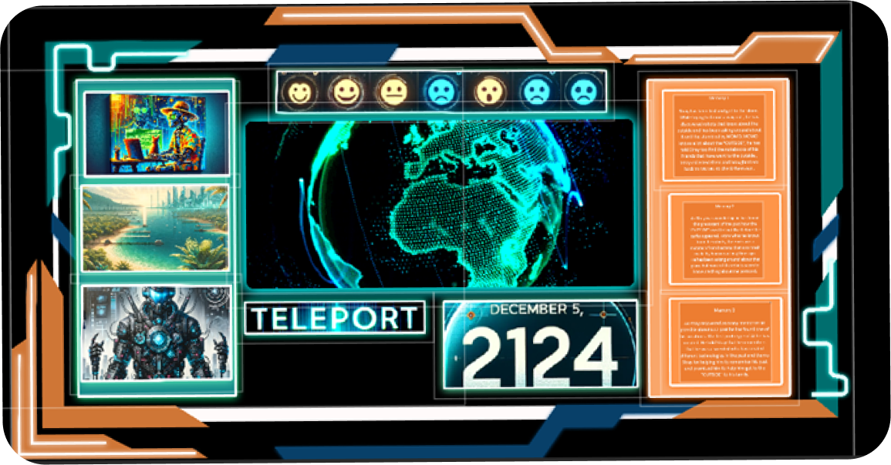

UI Images and Videos

Title: Futuristic UI
Type: Projection
Platform: MadMapper ,Figma

Project Description: This project focuses on creating a futuristic user interface and user experience design . The narrative takes the story from the game "Stray" and transforms it into a new interactive futuristic experience. The goal is to incorporate a futuristic design and technologies to create an immersive and engaging experience for users.
Key Features:
The main goal of this project is to create a futuristic user interface that enhances the user experience and provides a unique and engaging interaction with the product. The project aims to push the boundaries of traditional UI design by incorporating innovative narrative and design principles.